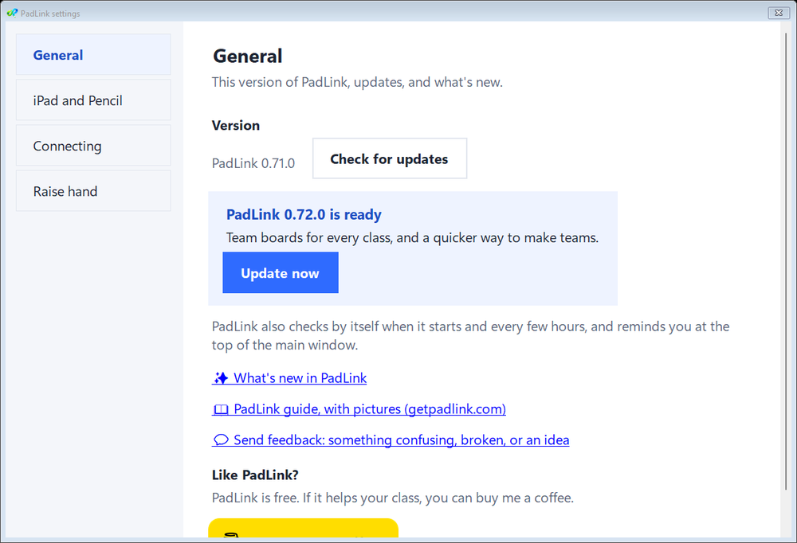
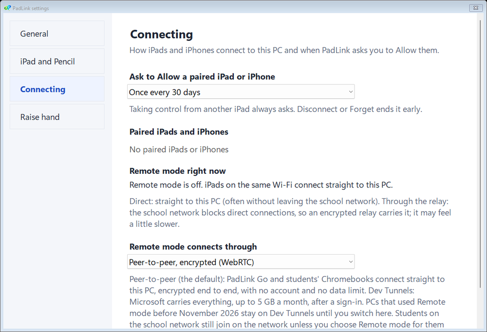
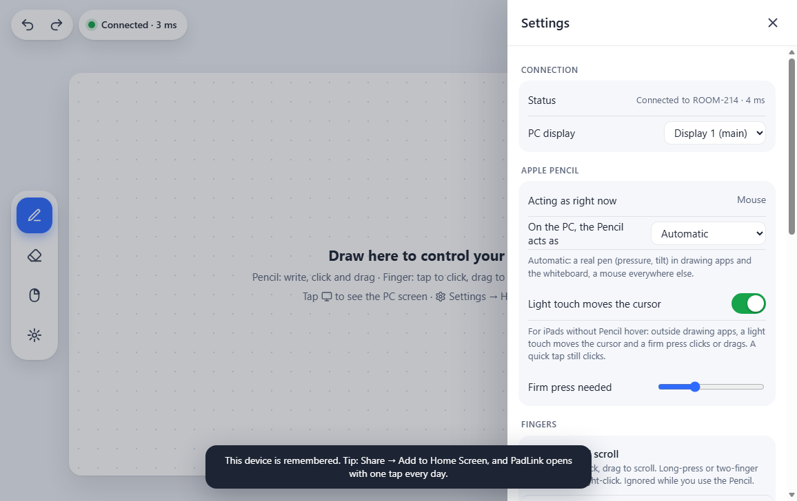
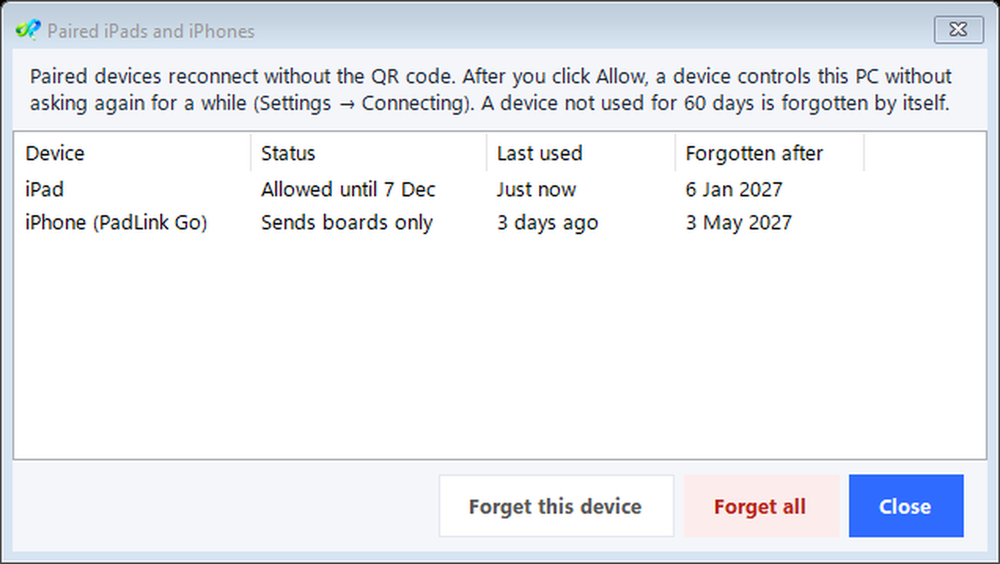
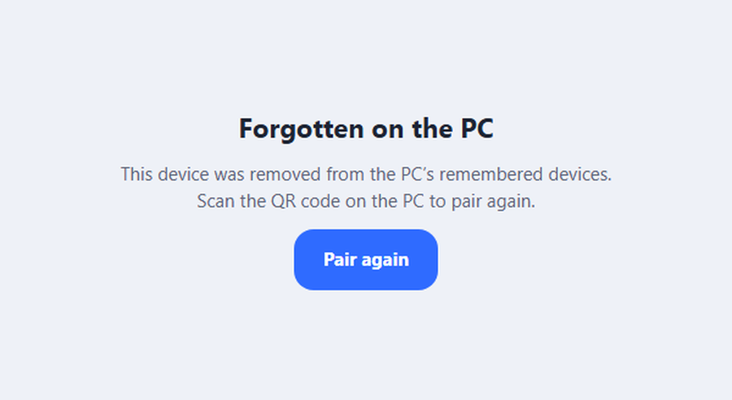
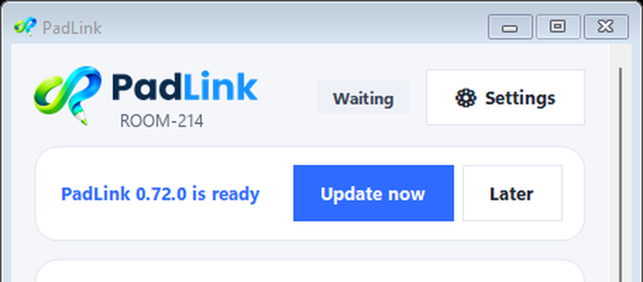

Guide › Settings and troubleshooting
Settings and troubleshooting
Where PadLink's settings are, how updates work, and what to do when something doesn't.
1. Settings on the PC
Click ⚙ Settings at the top of the PadLink window. The categories are down the left.

- iPad and Pencil: what the Apple Pencil acts as on the PC. Automatic makes it a real pen with pressure and tilt in drawing apps and the whiteboard, and a mouse everywhere else.
- Connecting: how often a paired iPad or iPhone needs Allow, your paired devices, and how Remote mode connects. Remote mode right now shows whether your iPad and students connect direct (straight to your PC) or through the relay (when the school network blocks direct connections; still encrypted, maybe a little slower). Rarely needed settings, like the network address the iPad should use, are under ▸ Advanced.
- Raise hand: the chime on the PC when a student raises their hand, and what the PC screen shows.

2. Settings on the iPad or iPhone
Tap ⚙ on the iPad or iPhone. These settings are for that device only.

- Connection: which PC you're connected to, and which screen you control if the PC has more than one.
- Apple Pencil: what the Pencil acts as. On iPads without Pencil hover, Light touch moves the cursor lets a light touch move the pointer and a firm press click. Set how firm with the slider.
- Fingers: tap and scroll, or act like the Pencil (the iPhone's default).
- Picture quality: choose Smooth if the PC screen stutters on the iPad.
- Help & tips: every gesture and button, right on the iPad.
3. Paired iPads and iPhones
The first time an iPad or iPhone connects, the PC asks you to Allow it. After that it reconnects by itself, with no code, for 30 days (change this in Settings → Connecting).

- Only one device controls the PC at a time. Taking over from another device always asks first.
- Settings → Connecting lists each paired device and when it was last used. Forget one, or Forget all (for a lost iPad, say).
- A device that isn't used for 60 days is forgotten by itself.

A forgotten iPad shows Forgotten on the PC. Tap Pair again and scan the QR code on the PC.

4. Updates
PadLink checks for updates by itself when it starts and every few hours. When there's one, a bar appears at the top of the PadLink window.

- Update now downloads it, checks it, and restarts PadLink. Your boards, class lists and settings stay.
- Later hides the bar until the next version comes out. Settings → General still offers it.
- After an update, PadLink shows What's new once.
- Every update is signed. PadLink installs only updates that really come from PadLink.
- On the iPad, reload the PadLink page if buttons look out of date after an update.
5. Something's not working
The iPad page never loads
Your network keeps the iPad apart from the PC. This is common on school Wi-Fi. Turn on Remote mode in the PadLink window.
"Code not valid"
The pairing code changes every 10 minutes, and a PadLink Go code works once. Scan the QR code on the PC again, or click New code now. Paired devices don't need a code.
The iPad says "Reconnecting…"
PadLink was closed, or the PC went to sleep. Open PadLink (or wake the PC) and the iPad reconnects by itself.
The PC screen stutters on the iPad
On the iPad, ⚙ Settings → Picture quality → Smooth.
Windows "protected your PC"
PadLink isn't signed with a paid certificate yet. Click More info, then Run anyway. You only need to do this once.
The firewall window was cancelled
Use Remote mode, which needs no firewall changes. Or ask your IT team to allow PadLink in Windows Security → Firewall & network protection → Allow an app through firewall.
Remote mode asks me to sign in again
Microsoft's sign-in for Remote mode lasts a while, not forever. PadLink usually signs in again by itself; if it asks, sign in again with GitHub or Microsoft, or tap Sign in on your phone instead to keep it off the projector. A school Microsoft account may be blocked; a personal account works.
Remote mode says "Rate limit exceeded"
Microsoft asks PadLink to slow down. Wait about a minute: PadLink tries again by itself.
A student's page stays blank or "can't be reached"
Their device can't reach your PC on the network it's on. This usually happens when Students join through is set to School network and a student uses their own phone or laptop on a different Wi-Fi (a guest network, say).
- Easiest: on the join code, click Student on another Wi-Fi? and have the student scan the second code (PadLink 0.57 or later). See Students.
- Or have the student connect to the same Wi-Fi as the school's student devices, if they're allowed to.
- Or, in Class tools → Students → Class settings, switch Students join through to Remote mode, then show the join code again. Students who join from then on come through Remote mode, which uses some of its monthly data. Students already in stay as they are.
Students can't join
- On school Wi-Fi, turn on Remote mode. Students join through it too, unless Class tools → Students → Class settings → Students join through is set to School network: if so, switch it to Remote mode.
- Students can join from a Chromebook or any device with a web browser. They scan the QR code, or type the address and the 6-letter code.
- Check that you clicked Let in for them.
PadLink closes by itself while I work
Some antivirus programs (Malwarebytes, for example) mistake PadLink saving your board for ransomware and close it. Add the PadLink folder to your antivirus's allowed list, and exclude it from ransomware protection. Your board is saved a few seconds after each change, so little is lost.
The Pencil can't click a window
Windows doesn't let PadLink control windows that run as administrator, like install prompts. Click those with the PC's mouse.
My school's web filter blocks PadLink
Your IT team can allow it. For schools and IT lists what PadLink needs.
6. Where PadLink keeps things
Everything stays on your PC. Nothing is sent to us.
| What | Where |
|---|---|
| Your boards | Board name → Open the boards folder (AppData\Local\PadLink\Boards) |
| Poll reports and spreadsheets | Documents › PadLink › Poll results |
| Class lists and settings | AppData\Roaming\PadLink |
| Students' boards and poll answers | Only in the PC's memory during the lesson. Closing the class deletes them. |
To move a board to another PC, use Save as a file… in the board name menu, then Open a board file… on the other PC.
7. Still stuck?
Tell us what happened on PadLink's contact page. Say what you were doing and what you saw (a screenshot helps).